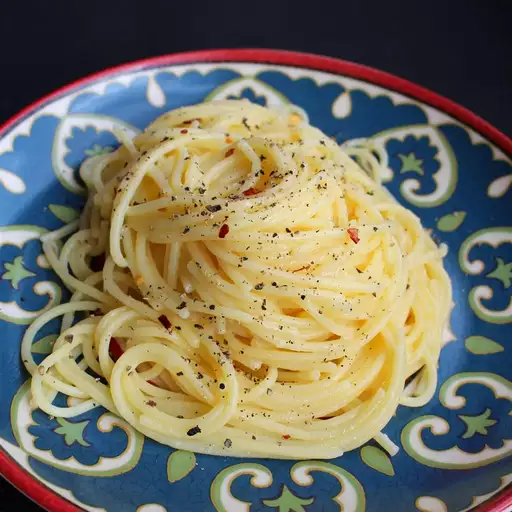

Cacio e Pepe

Description
Creamy cheesy and simple - what more can you ask for in a pasta dish?
Jazz up mid-week meals with a bit of Italian flair
Ingredients
- 1 pound of Spaghetti
- 6 tablespoons of Olive Oil
- 2 minced garlic cloves
- 2 teaspoons of ground black pepper
- 250g of Pecorino Cheese
Steps to make
- Bring a large pot of lightly salted water to a boil. Cook spaghetti in boiling water, stirring occasionally, until tender yet firm to the bite, about 12 minutes. Reserve 1 cup cooking water, then drain spaghetti.
- Heat olive oil in a large skillet over medium heat. Cook and stir garlic and pepper in hot oil until fragrant, 1 to 2 minutes. Add cooked spaghetti and Pecorino Romano cheese. Ladle in 1/2 cup reserved cooking water; stir until cheese is melted, about 1 minute. Stir in more cooking water as needed, 1 tablespoon at a time, until sauce coats spaghetti, about 1 minute more.
Home